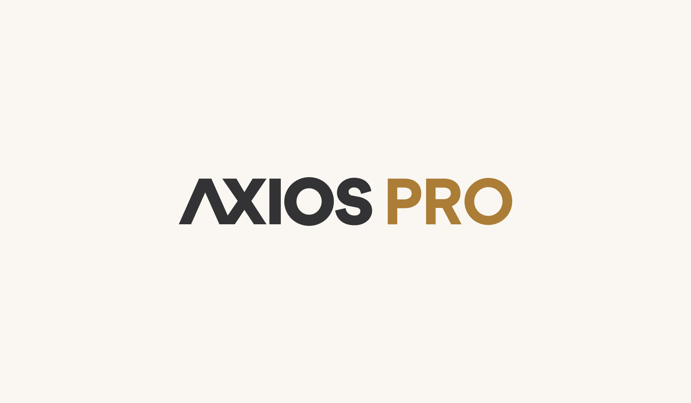
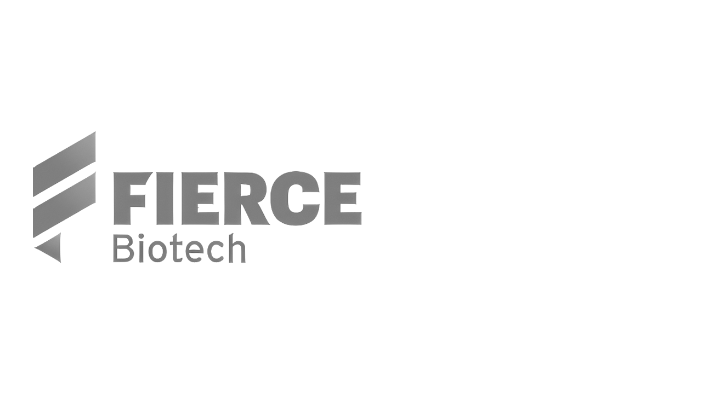
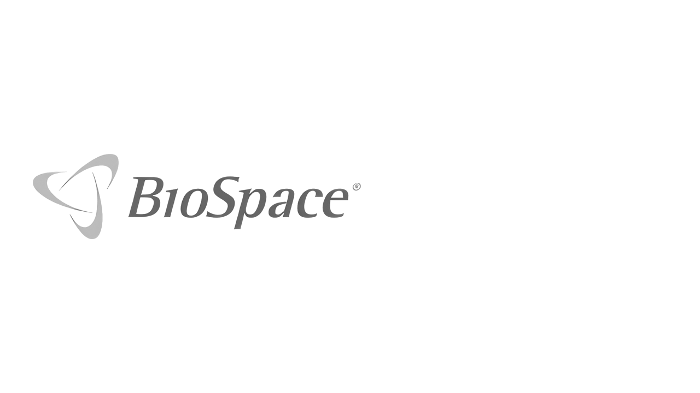
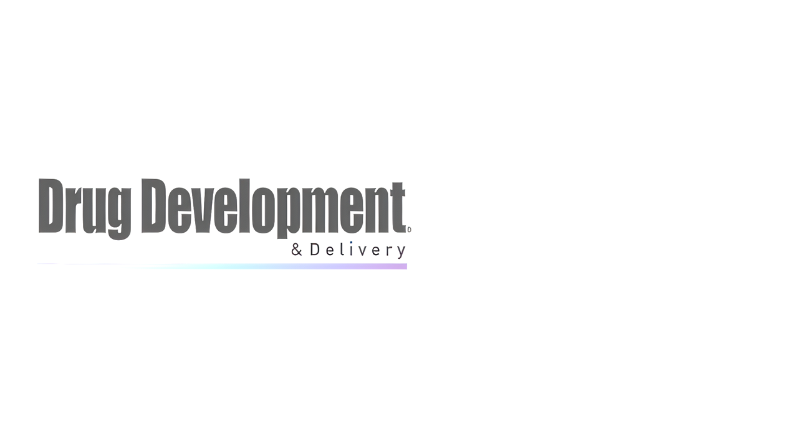
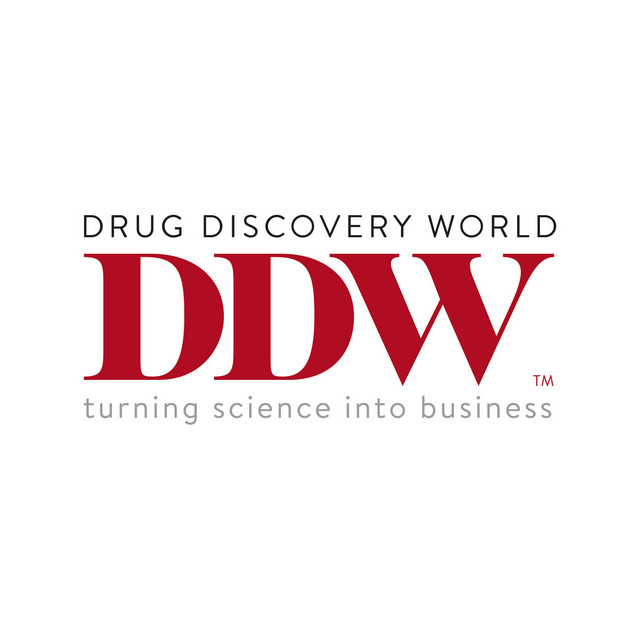

- 22-pub-machine-learning-based-optimization.png
source à 59% d'opacité, ramenée à 100 %
- 5th-annual-biotech-breakthrough-awards-program-honors-worlds-most-innovative-life-sciences-and-biotechnology-companies.png
- 9xchange-biopharma-marketplace-partners-with-phasev-to-bring-ml-powered-clinical-trial-optimization-technology-to-ecosystem-members.png
- bioforum-becomes-latest-cro-to-deploy-phasevs-ai-trial-design-tech.png
- cros-must-embrace-ai-says-phasev-following-50m-funding-round-to-expand-platform.png
- colorectal-cancer-in-elderly-patients.png
- efficacy-of-pembrolizumab-vs-nivolumab-plus-ipilimumab.png
source à 33% d'opacité, ramenée à 100 %
source à 33% d'opacité, ramenée à 100 %
- companies-applying-ai-to-de-risk-clinical-trials-2026-watchlist.png
- computer-aided-clinical-trials-for-medical-devices-from-research-to-reality.png
plusieurs tons (L 80 à 195) ramenés au même blanc plein
- dia-2024-machine-learning-and-simulations-to-facilitate-clinical-trials.png
- digital-health-50-the-most-promising-digital-health-startups-of-2025.png
- european-biotech-trends-to-watch-in-2025.png
- exact-statistical-tests-using-integer-programming.png
- robust-cate-estimation-using-novel-ensemble-methods.png
- causal-responder-detection.png
source avec transparence, posée sur blanc avant conversion
source avec transparence, posée sur blanc avant conversion
source avec transparence, posée sur blanc avant conversion


- exclusive-phasev-raises-50m-series-a-to-optimize-clinical-development.png
source remplacée par missing/axios-pro.webp

- gi-focused-cro-alimentiv-ups-trial-tech-with-phasevs-adaptive-machine-learning-software.png
- quanticate-and-phasev-partner-on-new-adaptive-clinical-trial-service.png
- phasev-reaps-15m-in-funding-to-streamline-trial-design-with-machine-learning.png
- how-a-i-is-disrupting-pharma-the-high-stakes-race-to-revolutionize-drug-discovery.png
- machine-learning-drafted-to-aid-phase-3-testing-of-als-therapy-primec.png
plusieurs tons (L 84 à 205) ramenés au même blanc plein
- marks-fda-struggles-to-keep-up-with-innovation-in-gene-editing-ai.png
source remplacée par missing/0f4a6fad11e98d731f3f8e3a2bb1522cda0803ec.png
- meet-the-ai-disruptors-60-the-startups-defining-ais-future.png
- melanie-ivarsson-scientific-advisory-board-member-phasev-phasev-ceo-now-is-the-time-to-embrace-ai-for-clinical-trial-success.png
- melanie-ivarsson-scientific-advisory-board-member-phasev.png
- navigating-complexity-in-master-protocols-with-key-operational-partners.png
- phasev-advances-machine-learning-driven-lupus-research-in-new-toronto-collaboration.png
source remplacée par missing/featured-image-HELTH-1.png
- phasev-and-alimentiv-to-support-execution-of-adaptive-clinical-trials-for-gi.png
- neurosense-taps-phasevs-ml-tech-for-phase-iii-als-trial-analysis.png
- sustainability-challenges-in-rare-disease-trials-remain-but-change-is-happening.png
- phasev-raise-15m-for-ml-technology-to-optimise-trial-design.png
- phasev-and-bioforum-partner-to-enhance-clinical-trials-with-ai-ml-2.png
- phasev-and-bioforum-partner-to-enhance-clinical-trials-with-ai-ml.png

- phasev-and-quanticate-partner-to-help-sponsors-run-more-adaptive-trialsphasev-and-iomedico-partner-to-launch-new-ml-powered-solution-to-increase-success-rates-of-phase-3-oncology-trials-biospace.png
plusieurs tons (L 94 à 189) ramenés au même blanc plein
- phasev-announces-new-clinops-ai-platform-transforming-clinical-trial-operations-with-precision-guided-site-selection.png
- seven-top-pharma-companies-adopt-phasevs-machine-learning-technology-for-drug-development-2.png
- phasev-appoints-hamza-sheikh-as-head-of-business-development.png
plusieurs tons (L 141 à 205) ramenés au même blanc plein

- phasev-launches-ai-powered-enrollment-lab-eliminating-guesswork-grounding-study-design-in-clinical-reality.png
- phasev-raises-50m-for-ai-platform-to-enhance-clinical-trials.png
- new-partnership-between-phasev-and-crohns-colitis-foundation-leverages-ai-and-rwd-to-transform-ibd-trials.png
- phasev-survey-finds-88-of-sponsors-face-five-week-delays-in-clinical-trial-reporting.png
- phasev-launches-ai-enrollment-lab-to-model-clinical-trial-feasibility-before-protocol-lock.png
- phasev-and-crohns-colitis-foundation-join-forces-to-fast-track-ibd-clinical-trials-with-ai.png
- phasev-unveils-machine-learning-powered-platform-to-improve-oncology-clinical-trials-bioquick-news.png
source remplacée par missing/images.png
- pos1014-use-of-an-interactive-adaptive-trial-ai-simulation-tool.png
source remplacée par missing/18334616380_d884da17d4_b.jpg
- pos1014-use-of-an-interactive-adaptive-trial-ai-simulation.png
source à 56% d'opacité, ramenée à 100 %
- scope-2026-ai-in-clinical-research-poised-for-boom-times.png
- trendspotting-embracing-ai-dei-changes-restrategizing-research-sites.png
- scope-summit-is-expected-to-be-a-major-platform-for-news-in-clinical-trial-innovation.png
- scrip-asks-what-does-2026-hold-for-biopharma-part-5-ai-and-operational-excellence.png
- as-pricing-pressures-mount-biopharma-turns-to-ai-to-reduce-trial-failure-rates.png

- seven-new-drug-discovery-deals-powered-by-ai.png
- ml-could-facilitate-increased-adoption-of-adaptive-clinical-trials-drug-discovery-world-ddw.png
source remplacée par missing/ab6765630000ba8a08e8ac20fcde2b48e4865bf2.jpeg
source remplacée par missing/ab6765630000ba8a08e8ac20fcde2b48e4865bf2.jpeg
- seven-top-pharma-companies-adopt-phasevs-machine-learning-technology-for-drug-development.png
- supercharging-ai-for-clinical-development-our-investment-in-phase.png
Écartés (voir report.md)
Aucun logo écarté.